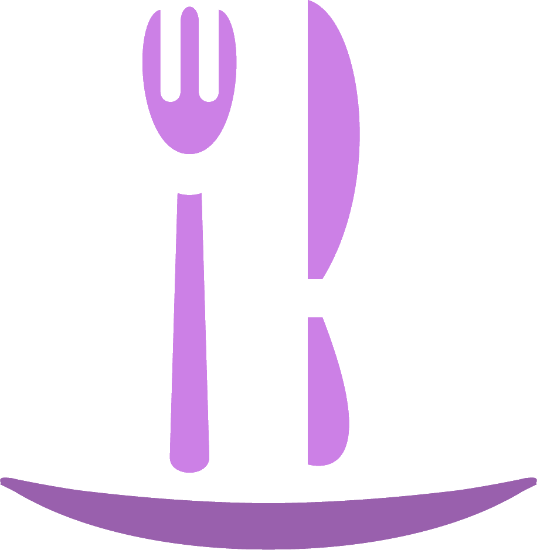
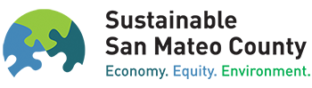
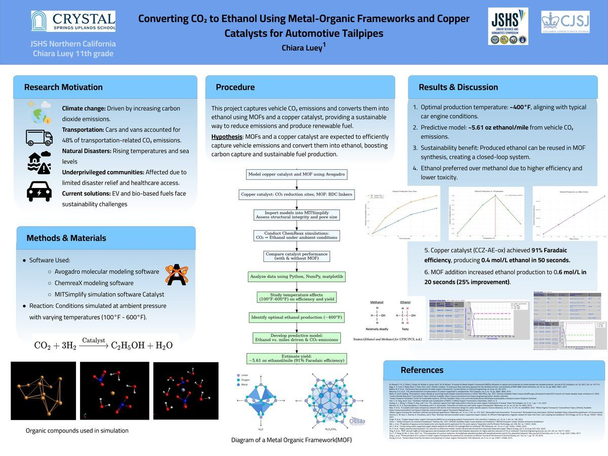

Now: Cornell VC, Cognition AI deal team
Now: Cornell VC, Cognition AI deal teamChiara Luey
Cornell Environmental Engineering ’30. I’ve published catalyst research, gotten 4 school districts to go electric, given a TEDx talk and started two organizations.







Designed copper–MOF catalytic pathways that turn tailpipe CO₂ into ethanol. Published with mentors from MIT, Stanford and Washington State.

↗VentureCognition AI deal teamCornell Venture Capital, sourcing and diligence alongside the club’s VCs.
↗Policy9,000+students mobilizedElectric-First resolutions passed in 4 school districts.
↗Hackathon · Nov 2026Judges’ ChoiceCornell Local AI Hackathon. Adam, an AI tutor that runs fully offline.
↗Impact2M+ kgCO₂ cut a year (est.)From the Electric-First campaigns I co-led.
↗ TalkTEDx speaker · “Circles”
TalkTEDx speaker · “Circles”Plus podcasts and press features.
▶↗LabStanford ChemistryResearch intern in the Waymouth and Rotskoff labs: computational molecular physics and energy storage.
↗StagesUN Bangkok to MITPresented at ICAE (UN Bangkok), MIT THINK, JSHS and the California State Science Fair.
↗Founder500+K–8 students taughtEnergizing Youth: clean-energy lessons, now with branches in Zambia and Brazil.
↗ FounderChiara Malia
FounderChiara MaliaMy jewelry brand. 19-piece debut collection.
↗AthleteTop 100US Squash3× U.S. Squash Scholar-Athlete.
↗At WestLight Energy$50Kgrant managedClean Energy Advisor. I mentor interns and run K–12 outreach.
↗AwardsNCWIT national awardPlus the 2026 Youth Sustainability Award.
↗PlayExplore my Cornell campus in 3D →Walk, flip and collect tokens. Every building opens a page.
↗